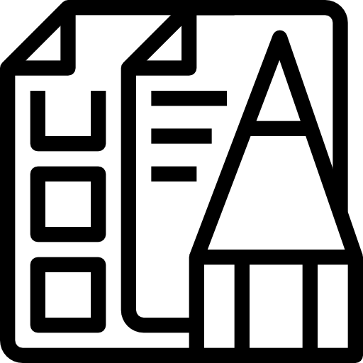
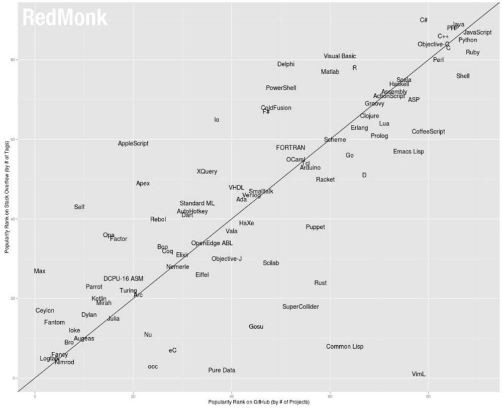
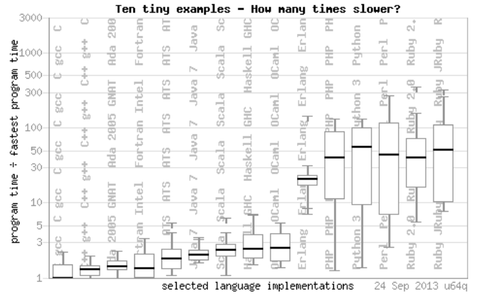
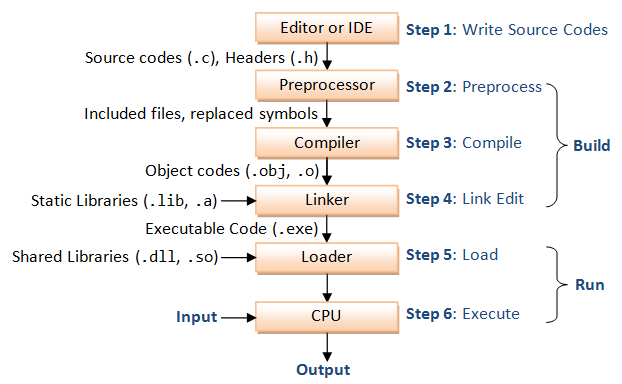

ELO320 - Estructuras de Datos y Algoritmos
Introducción
Marie González-Inostroza
¡Hola!
Soy Marie González. Estoy aquí porque me encanta enseñar sobre tecnología.
Me pueden contactar al mail marie.gonzalez@usm.cl*
Respondo en horario hábil (L-V de 9 a 18 hrs)Coordenadas
- Nombre de la asignatura: Estructuras de Datos y Algoritmos
- Sigla: ELO-320
- Requisito: IWI-131 o TEL-102
- Dedicación: 5 SCT 118 hrs
- Clases presenciales (en general):
- jueves 16:05 a 18:00 Sala F-406
- Ayudantía: horario por confimar
- Plataforma: AULA y github classroom
- Horario de consultas: M 14.00 a 14.30 previa cita
Equipo docente
Cristian Pizarro
Ay. contacto
Javiera Fuentes
Ay. corrección
Camilo Muñoz
Ay. corrección
Resultados de aprendizaje
Al terminar el curso la/el estudiante será capaz de:- Calcular complejidad de algoritmos, empleando funciones de órdenes de complejidad.
- Utiliza algoritmos basados en arreglos, árboles, tablas de hash y colas de prioridad, implementándolos en pseudocódigo y en C.
- Emplea algoritmos de ordenamiento, implementándolos en pseudocódigo y en C.
- Ejecuta algoritmos básicos para grafos, implementando soluciones en pseudocódigo y en C.
- Analiza estructuras de datos avanzadas, conociendo los tipos de problemas donde aplicarlas.
- Diseña soluciones eficientes utilizando los algoritmos vistos en el curso.
- Verifica el correcto funcionamiento de programas, sometiéndolos a datos de prueba escogidos convenientemente.
Evaluaciones
Tareas (T)

Certámenes (C)
Proyecto (P)
Nota Final NF=T*0.35+C*0.35+P*0.3
Condición: C ≥ 50, T ≥ 50 y P≥ 50
Sobre las tareas
- Individuales
- Entrega el día antes del certamen
- Duración: ~4 semanas
- Estudio práctico del contenido
- Antelación y dedicación recomendadas
- Uso de software de detección de copias
Sobre los certámenes
- Individuales
- En horario de clases
- Duración: 1 hora
- Preguntas de diseño, análisis y corrección de errores
- Contenido en base a la tarea
Sobre el proyecto
- Objetivo: aplicar lo aprendido en el curso en un problema más complejo
- Grupos de 2 a 3 personas
- Tiene 2 entregas
- Duración: ~4 semanas
- Antelación y dedicación recomendadas
- Uso de software de detección de copias
Metodología
- Cátedras cortas
- Clases con metodologías activas
- Ejercicios de programación
- Preguntas Individuales y grupales
- Estudios de casos
- Se requiere participación activa
- Avances de tareas y proyecto durante la clase
Qué se espera de ustedes en este curso:
- Equivocarse
- Colaboración
- Experimentar
- Disciplina
¿Qué veremos en este curso?
- Estructuras de Datos para manejo eficiente de datos
- Algoritmos construidos sobre estas estructuras
- Estructuras bases
- Construir sus propias estructuras
- Definir Tipos de Datos Abstractos
- Programar de forma eficiente
- Analizar y comparar algoritmos
- Lenguaje de programación: C
Sistema Operativo
- Linux recomendado
- Windows/MacOS bajo responsabilidad del estudiante, sin soporte
Bibliografía
- Libro Guía: Introduction to Algorithms (Cormen et al.)
- Libro Recomendado: Data Structures and Algorithm Analysis (Shaffer)
ELO320 - Estructuras de Datos y Algoritmos
Conceptos básicos
¿Qué es una Estructura de Datos?
Una estructura de datos es una abstracción para organizar datos de manera que puedan ser manejados, procesados y utilizados eficientemente a través de un programa.
Permiten que los algoritmos trabajen de forma eficaz sobre la información.
Ejemplos
- Palabras → Strings
- Python: Listas, Tuplas, Diccionarios
- C++: Vectores, Listas, Map
- Control+Z → Stack/Pilas
- Filas en bancos/supermercados → Queues/Colas
- Gramática de lenguajes → Trees/Árboles
¿Qué es un Algoritmo?
Secuencia de pasos para resolver un problema o realizar una tarea.
Debe ser preciso, finito y eficiente.
Actividad 1.1: Nuestro primer algoritmo
- En grupos de 3 personas, deben analizar el siguiente problema: Un grupo de amigos se fue de vacaciones y cada uno pagó distintas cosas para el grupo. Ahora, desean dividir las cuentas de modo que cada uno aporte lo mismo. Por lo tanto, deben calcular los montos que cada uno debe pagar y a quién.
- Definan una estructura de datos que les permita guardar la información de los amigos
- Escriban un algoritmo paso a paso (tipo pseudocódigo) para resolver este problema.
ELO320 - Estructuras de Datos y Algoritmos
Introducción a C
Marie González-Inostroza
¿Por qué es C tan relevante?
- Diseñado para desarrollar UNIX OS.
- Maneja actividades de bajo nivel (en la memoria), a pesar de ser un lenguaje de alto nivel.
- Se relaciona eficientemente con instrucciones de máquina.
- Perdura su uso en el tiempo.
- La mayoría de software tiene una relación directa o indirecta con
Métodos de Implantación
- Compilación: (e.g. C, C++)
Traduce a lenguaje de máquina para posterior ejecución (interpretación directa por el procesador). - Interpretación: (e.g. LISP, Python)
Una máquina virtual interpreta directamente el código fuente durante la ejecución. - Híbrido: (e.g. Java, C#)
Se compila a un lenguaje intermedio, que luego es interpretado.
Uso de Código en C
- Modularización: descomponer programas en unidades de desarrollo más pequeñas (módulos).
- Compilación Separada o Independiente: Módulos de un programa se pueden compilar por separado (bibliotecas).
- Reutilización: Módulos y clases se pueden reutilizar para diferentes programas.
Popularidad de Lenguajes (stackoverflow, redmonk)

Rendimiento de Lenguajes

Aprendamos C
¡Comencemos a programar en C!
C Estructura general
- Requiere un método de inicio de ejecución: main
#include
int main() {
printf("Hola Mundo\n");
return 0;
}
if __name__ == "__main__":
print("Hola Mundo!")
Actividad 1.2: Hola Mundo
Objetivo: Familiarizarse con la sintaxis básica de C.
En parejas, escriban un programa en C que imprima "Hola Mundo" en la consola.
Utiliza el código de la actividad en Github Classroom: https://classroom.github.com/a/kpFmBvxb
Compilación: gcc
- C es un lenguaje compilado, esto significa que:
- Su código es transformado, a través de un compilador, a lenguaje máquina.
- El resultado de la compilación es un binario ejecutable.
- Binarios ejecutables: .bin, .exe, .appinstall, etc.

Compilación: gcc

Compilación: gcc
Compilación directa
[user@pc dir]$ gcc -o ejecutable codigo1.c codigo2.c -Wall
- -o (output): indica que lo siguiente es el nombre del ejecutable.
- codigoX.c: es el archivo de nuestro código (puede ser más de uno).
- -Wall: indica al compilador que de aviso de potenciales peligros (warnings).